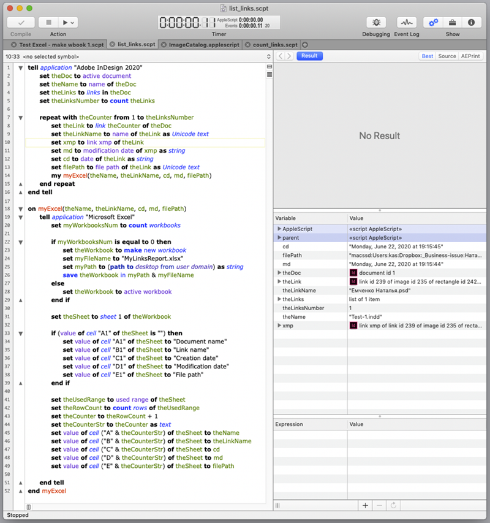
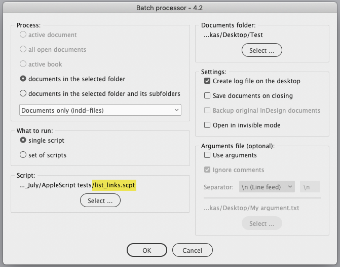
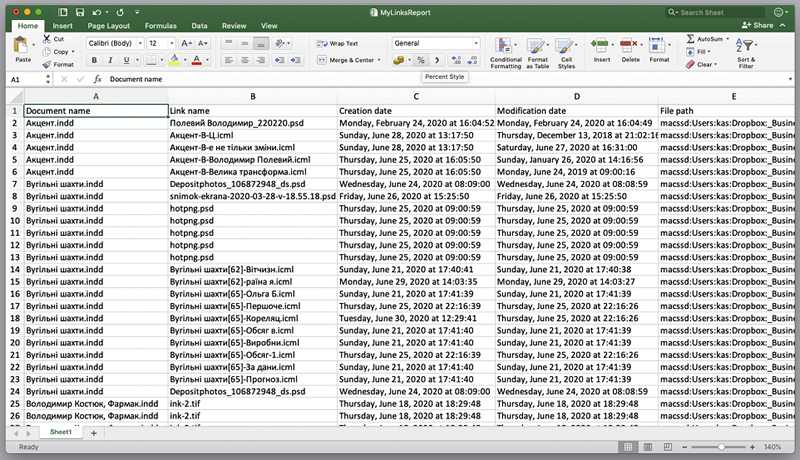

List links from InDesign to Excel
This simple script is written in AppleScript for the batch processor to illustrate how to interact from InDesign with Excel. Written in InDesign 2020 and Excel 2016 using Script Debugger.
Important note: why AppleScript doesn’t work anymore when run from the batch processor?

It gets the list of all links in every InDesign document with the following properties:
- Name
- Creation date
- Modification date
- File path
If a workbook is open in Excel, the data are written into the active spreadsheet. Otherwise, a new workbook is created and saved to the desktop: named MyLinksReport.xlsx.
Use the batch processor version 4.2 or later and select the script.

When the script completes, it produces a result like so:

Note: it doesn’t save and close the Excel file.
Using this script as a starting point, you can easily adjust it to your needs to make reports about the links used in your documents.
Click here to download the script.